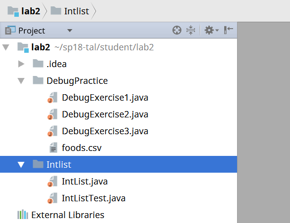
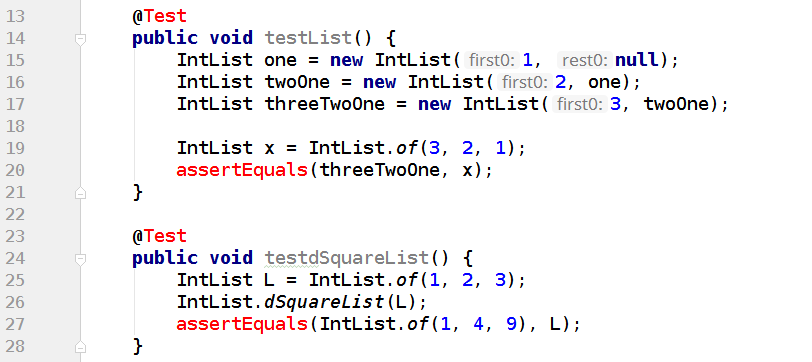

- I can’t run my Java file/Files don’t show up as java files
- Variables show up as red in IntelliJ
- Everything looks right but it still doesn’t work!
This document is intended to help you through frequently encountered weird technical failure scenarios (WTFS) in IntelliJ. It will be populated as questions arise.
I can’t run my Java file/Files don’t show up as java files

If your files look like this then you haven’t properly imported the project. When starting an assignment for the first time, you must IMPORT the project instead of OPEN. To fix this, simply close the project (“File” -> “Close Project”). And then click “Import Project”. See Lab 2 Setup for additional instructions on importing a new project.
Variables show up as red in IntelliJ

This means that you forgot to add the CS61B javalib as a library for this project! Every time you start a new assignment (unfortunately, EVERY TIME) you must readd the javalib. To do this, simply go to “File” -> “Project Structure” -> “Libraries” and add the javalib inside your repo. See Lab 2 Setup for additional instructions on adding Java libraries.
Everything looks right but it still doesn’t work!
Sometimes the easiest thing is to simply do it all over again. Even if you know you just did everything correctly, starting over very often just fixes the problem. First close the project (“File” -> “Close Project”) and then reimport the project from the beginning.